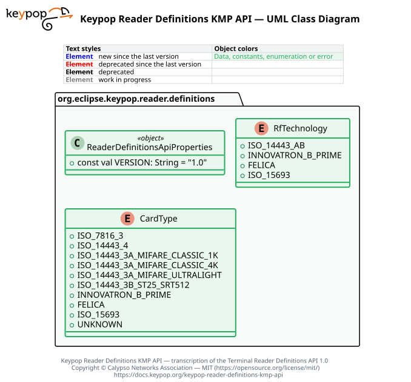

Keypop Reader Definitions KMP API
Kotlin Multiplatform transcription of the Terminal Reader Definitions API specification proposed by the Calypso Networks Association, part of the Keypop open-source project hosted by the Eclipse Foundation.
This API is a foundation one: it defines the RF technologies a contactless reader can activate during polling, and the card types a reader reports after detection. It declares no behaviour and carries no platform-specific code — everything lives in the common source set.

Reading this documentation
Each type carries a link to its normative definition in the specification, and nothing more. The descriptions are deliberately not duplicated here: the specification is the reference, and a copy would age silently as the specification is corrected.
Those links target the latest-1.0 alias of the published specification, which always resolves to the latest patch of that minor version: this library and the specification share their major and minor version, each advancing its own patch level.
Platforms
Published for the JVM — which also serves Android, the artifact being a Java 8 jar — and for iOS (iosArm64, iosSimulatorArm64, iosX64).